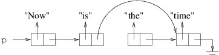
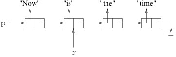
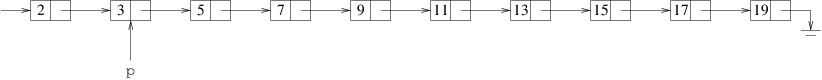
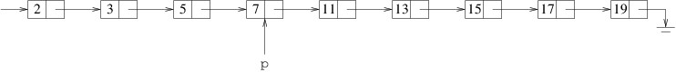

Finding Prime Numbers
Finding Prime Numbers
An integer greater than $ 1 $ is said to be prime if it is not divisible by any positive integers other than itself and $ 1 $. Thus, $ 2 $, $ 3 $, and $ 5 $ are prime, but not $ 1 $ (it is not greater than $ 1 $) or $ 4 $ (it is divisible by $ 2 $). Because every integer is divisible by itself and $ 1 $, we will call any other positive factors nontrivial factors; thus, a prime number is an integer greater than $ 1 $ that has no nontrivial factors. The study of prime numbers dates back to at least the third century BC. One of the earliest known algorithms finds all prime numbers less than a given integer $ n $. This algorithm is known as the Sieve of Eratosthenes, and is attributed to the Greek mathematician Eratosthenes of Cyrene (c. 276 BC - c. 194 BC).
The most basic version of this algorithm operates as follows:
- Place all integers greater than $ 1 $ and less than $ n $ in order in a list.
- For each element $ k $ in the list, remove all subsequent elements that are divisible by $ k $.
- The remaining values are the prime numbers less than $ n $.
For example, suppose $ n = 20 $. We then place the integers from $ 2 $ to $ 19 $ in a list: $$ 2\ 3\ 4\ 5\ 6\ 7\ 8\ 9\ 10\ 11\ 12\ 13\ 14\ 15\ 16\ 17\ 18\ 19 $$ We then remove all numbers following $ 2 $ that are divisible by $ 2 $: $$ \require{cancel} 2\ 3\ \cancel{4}\ 5\ \cancel{6}\ 7\ \cancel{8}\ 9\ \cancel{10}\ 11\ \cancel{12}\ 13\ \cancel{14}\ 15\ \cancel{16}\ 17\ \cancel{18}\ 19 $$ We then remove all numbers following $ 3 $ that are divisible by $ 3 $: $$ 2\ 3\ \cancel{4}\ 5\ \cancel{6}\ 7\ \cancel{8}\ \cancel{9}\ \cancel{10}\ 11\ \cancel{12}\ 13\ \cancel{14}\ \cancel{15}\ \cancel{16}\ 17\ \cancel{18}\ 19 $$ The algorithm continues, but none of the succeeding iterations finds any values to remove. Therefore, $ 2, 3, 5, 7, 11, 13, 17 $, and $ 19 $ are the prime numbers less than $ 20 $.
To see why this algorithm gives us exactly the prime numbers less than $ n $, first note that because we only remove a number when we find a nontrivial factor, we only remove non-primes from the list. What may be a little less obvious is that we remove all non-primes from the list. To see this, suppose $ m $ is a non-prime less than $ n $, and let $ a $ be its smallest nontrivial factor. Then $ a $ must be prime because any nontrivial factor of $ a $ would be less than $ a $ and would also divide $ m $. $ a $ therefore will not be removed from the list. When $ k = a $ in Step 2, $ m $ will be removed.
There is actually a good reason why the first two iterations in the above example removed all of the non-primes — once the algorithm reaches a divisor $ k $ such that $ k^2 \geq n $ (in this example, $ 5^2 = 25 \geq 20 $), all of the non-primes will have been removed. To see why this is true, let $ m $ and $ a $ be as above. We can then write $$ m = ab $$ where $ a \leq b $, and $ m $ is removed from the list when $ k = a $. We can then multiply both sides of the above equation by $ a/b $, yielding: $$ \frac{am}{b} = a^2. $$ Finally, because $ a \leq b $, $ a/b \leq 1 $. Therefore, $$ m \geq a^2. $$ We conclude that if $ m $ is a non-prime greater than $ 1 $, it is removed when the algorithm reaches some value $ k $ with $ k^2 < n $. We can therefore optimize the algorithm by stopping when $ k^2 \geq n $.
We can implement this algorithm using a linked list. A linked list is an appropriate data structure for this algorithm because once the list is built, all of the processing involves iterating through it from beginning to end — the same direction the links go.
To implement Step 1, it is easier to build the list from back to front, as we don’t need to maintain a separate reference to the end of the list. This step then consists of a loop that iterates from $ n - 1 $ down to $ 2 $, with each iteration adding to the front of the list a cell containing the loop index.
In order to be able to implement Step 2, we will need to know how to remove a cell from a linked list. Suppose, for example, that we want to remove the cell referring to “the” from the following linked list:

To remove it, we need the cell that precedes it to be followed by the cell that follows it:

In order to change that reference, we need a reference to the cell that precedes the cell we want to remove:

We can then remove the cell following the cell referenced by q as
follows:
q.Next = q.Next.Next;
Now that we know how to remove a cell from a linked list, let’s consider Step 2 of the algorithm. For one value of $ k $, we need to remove all subsequent values that are divisible by $ k $. In terms of the linked list, we need to start this process with the cell containing $ k $. For example, consider the second iteration from the example above — i.e., when $ k = 3 $:

We need to iterate p through the linked list, checking the next cell
on each iteration to see whether its contents are divisible by
$ k $. We
can check for divisibility by
$ k $ using the
remainder
operator — i.e.,
$ k $ divides
$ m $ if
$ m \mathbin{\texttt{\%}} k $ is 0. Thus, the first iteration
would see if
$ 3 $
divides
$ 5 $. It doesn’t, so we advance p to the next cell (containing
$ 5 $). We then see if
$ 3 $ divides
$ 7 $. Again it doesn’t, so we advance p to
the next cell (containing
$ 7 $). At this point,
$ 3 $ divides
$ 9 $, so we remove
the cell containing
$ 9 $ as shown above. This gives us the following linked
list:

Note that we have not yet advanced p, and indeed we don’t want to, as
$ 11 $ is the next value we want to check. Thus, on each iteration, if
$ k $
divides the value in the cell following p, we remove that cell;
otherwise, we advance p to that cell. We iterate this loop as long as
there is a cell following p.
The loop described above represents a single iteration of the loop described for Step 2. Thus, for Step 2, we need to iterate a variable through the list, performing the above on each iteration. We stop when we either have run off the end of the list or have reached a value of $ k $ such that $ k^2 \geq n $. Note that at the end of each iteration, we want to advance to the next cell.
Make sure when iterating through a linked list that you keep a reference to the beginning of the list. Otherwise, you will lose all of your list.